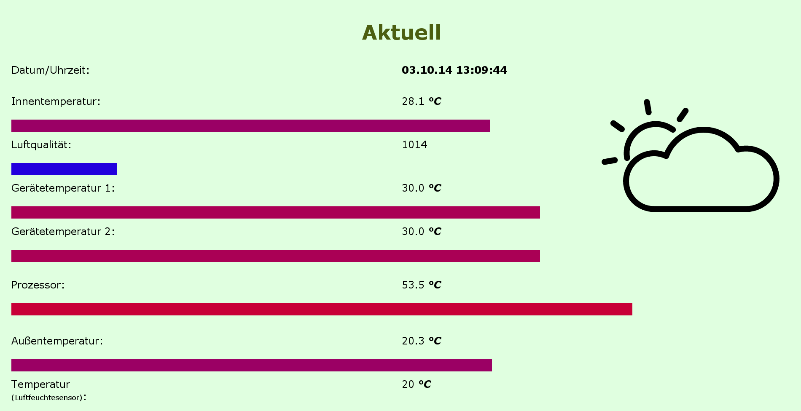

In meinem Projekt möchte ich mithilfe eines Raspberry Pi Umweltdaten aufzeichnen, speichern und auswerten.
Zur Aufzeichnung verwende ich einen Temperatursensor, einen Luftdrucksensor, einen Luftfeuchtesensor und einen Luftqualitätssensor. Die Daten werden abgespeichert und einerseits grafisch mithilfe von Javascript dargestellt und andererseits rechnerisch mit einem von mir geschriebenen Python-Programm ausgewertet.
Die Sensoren werden regelmäßig von einem Shell-Script (main.sh) ausgelesen.
Dieses Skript bereitet die Daten auf und speichert sie in eine csv-Datei. Zusätzlich werden Textdateien generiert, welche von der Weboberfläche und dem Display regelmäßig ausgelesen werden.
Bei jedem 1000. Aufruf wird die CSV-Datei gesichert, per E-Mail an mich verschickt und ich darüber mit einer Pushbenachrichtigung am iPad benachrichtigt.
Damit man nicht immer zum Computer laufen muss, um die aktuellen Werte zu erfahren habe ich ein Display an den Raspberry Pi angeschlossen. Ich habe ein Beispielprogramm erweitert, damit es statt einen statischen Text anzuzeigen, eine von main.sh generierte Textdatei ausliest und der Inhalt auf mehreren Seiten dargestellt wird. (→ display.py)
Zur grafischen Darstellung der Daten habe ich zwei Webseiten erstellt, die auf einem Apache-Webserver am Raspberry Pi liegen. Mithilfe von Javascript und Dygraphs wird ein Diagramm der Daten dargestellt. (Beispiel, Vorsicht, lange Ladezeit). Zur Darstellung der aktuellen Werte gibt es eine zweite Seite, die mithilfe von Javascript alle 5 Sekunden die aktuellen Daten nachläd und grafisch darstellt. Beide Seiten können auf mobilen Geräten (iOS, eventuell auch Android) nachdem sie zum Homebildschirm hinzugefügt wurden als Web-Application genutzt werden (im Vollbildmodus, mit eigenem Icon; funktioniert bei statischem Beispiel nicht). Wenn die Aufzeichnung gerade aus irgendeinem Grund nicht laufen soll, wird der Webseitenbesucher benachrichtigt.
Nachdem Daten aufgezeichnet wurden, kann die fertige CSV-Datei rechnerisch ausgewertet werden.
Zunächst muss sie mit einem Shell-Script vorbereitet werden.
Danach kann es ein von mir geschriebenes Python(3)-Programm auswerten.
Hierbei wird die Datei zuerst nach Ausreißern durchsucht und etwaige werden angezeigt.
Danach kann man den Zeitraum auswählen, in dem die Messung ausgewertet wird. Danach wird das arithmetische Mittel, Minimum, Maximum und Standardabweichung für jeden Sensor berechnet.
(„Video“ des Programms)
Ursprünglich habe ich versucht die Diagramme mit Gnuplot zu generieren. Da die fertigen Bilder jedoch statisch sind und der Raspberry Pi mit zunehmender Datenmenge sehr lange benötigt, habe ich dies aufgegeben. (zu Gunsten von Dyngraphs)
Damit der Start und Stop der Aufzeichnung (und des Displays) einfacher funktioniert habe ich ein init.d-Skript erstellt. Nun kann mit „sudo service aufzeichnung {start/stop/restart} die Aufzeichnung einfach gesteuert werden. Zusätzlich wird die Aufzeichnung beim Hochfahren gestartet und vorm Herunterfahren gestoppt.
Zusätzlich zu den wichtigen Teilen habe ich noch ein paar kleinere Funkionen, wie ein Windows Vista/7-Desktop-Gadget oder ein (etwas zu buntes) Logo für das Projekt.
{kind=link}
{kind=link}
{kind=link}